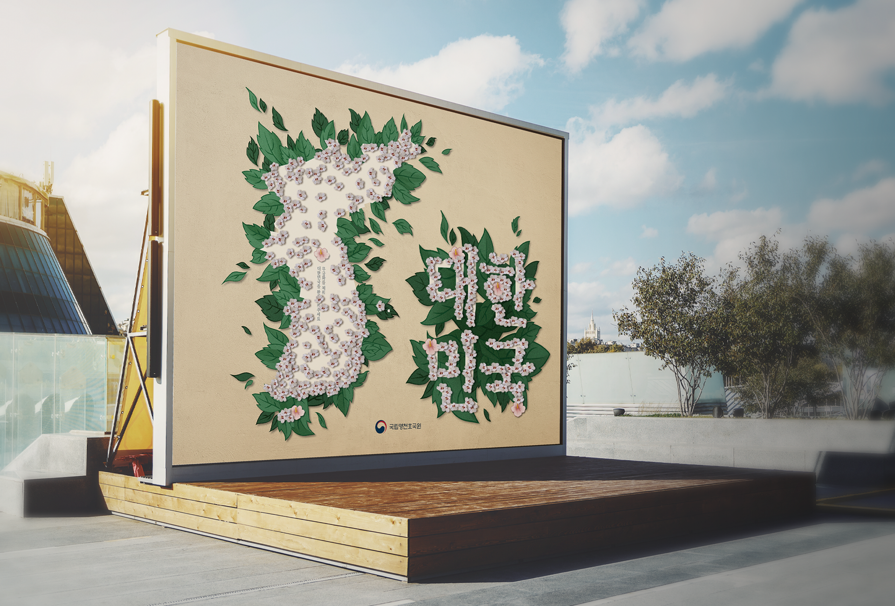
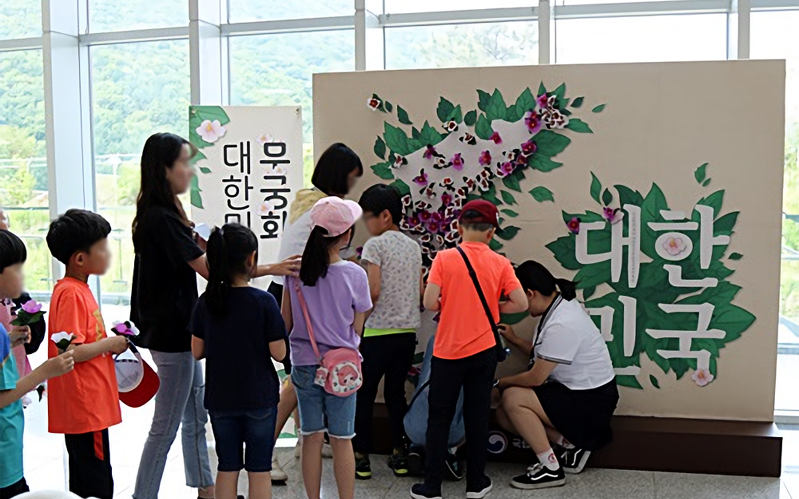

국립영천호국원
어린이날 행사 포토월
국립영천호국원에서 진행한
어린이날 행사에 사용된 참여형 포토월 디자인
Concept
무궁화를 포토월에 꽂아 대한민국 지도의 형태를 완성하는 활동성이 담긴 어린이날 행사 포토월로, 꽃을 꽂아야 하는 공간의 색을 통일하고, 꽃이 꽂혀있는 듯한 일러스트와 문구를 삽입하여 행동을 유도하였다. 꽃이 모두 꽂혀서 포토월이 완성 되었을 때 잎에 둘러쌓인 느낌을 표현하고자 디자인하였다.


실제 어린이날 행사에서 무궁화 지도 만들기에 참여하고 있는 아이들
